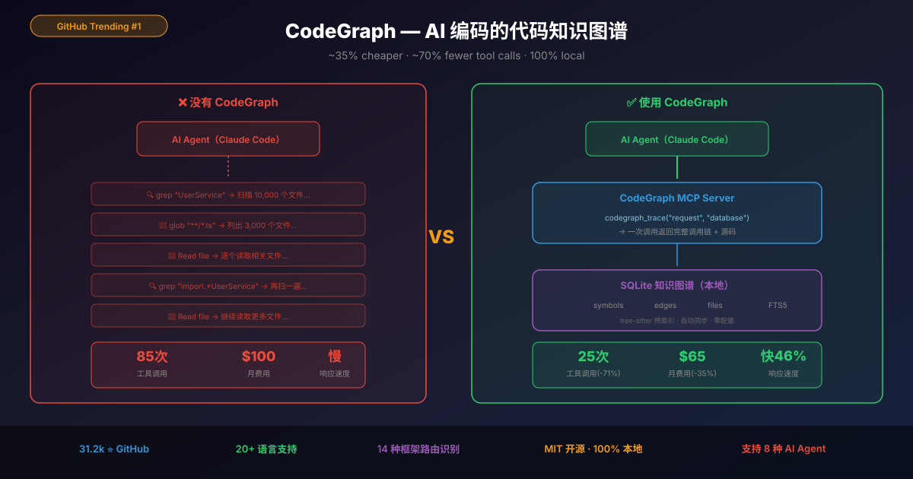
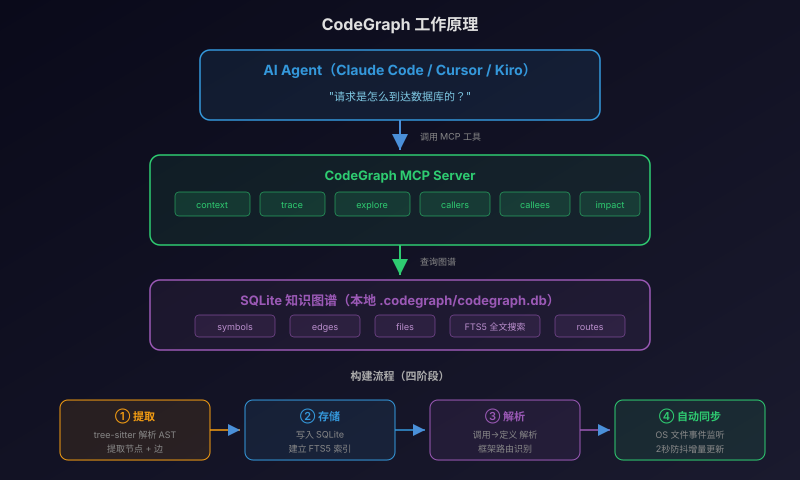

CodeGraph 深度评测：GitHub月榜第一，让AI编码省35%费用的代码知识图谱 - AI知识宇宙
一、AI 编码的隐藏成本：你的钱花在了"找代码"上
用过 Claude Code 或 Cursor 的开发者一定有这个体验：
你问 AI 一个关于项目架构的问题，它先花 30 秒用 grep、glob、Read 扫了一遍你的代码库，消耗了大量 token，最后才给你答案。
这不是 AI 不够聪明——而是它不认识你的代码库。每次对话都从零开始"探索"，就像一个新来的同事每天早上都忘了昨天看过的代码。
真实数据：在一个 10k 文件的 TypeScript 项目（VS Code 级别）中，AI Agent 回答一个架构问题平均需要 85 次工具调用，其中大部分是在"找东西"。
CodeGraph 的解决方案很直接：提前把代码库索引成知识图谱，让 AI 直接查图而不是扫文件。

二、CodeGraph 是什么？
| 维度 | 信息 |
|---|---|
| 开发者 | Colby McHenry |
| GitHub | colbymchenry/codegraph |
| Stars | 31,200+（2026年5月 GitHub Trending 月榜 #1） |
| 技术栈 | TypeScript + tree-sitter + SQLite（FTS5） |
| 许可证 | MIT |
| 版本 | v0.9.6 |
| 定位 | 为 AI 编码 Agent 提供预索引的本地代码知识图谱 |
一句话定义：CodeGraph 是一个 MCP Server，它用 tree-sitter 解析你的代码库，构建符号关系图谱存入本地 SQLite，然后通过 MCP 协议暴露给 Claude Code / Cursor / Codex / Kiro 等 AI 工具——让它们"查图"而不是"扫文件"。
三、Benchmark：到底能省多少？
在 7 个真实开源项目上，对比有/无 CodeGraph 时 Claude Code 回答一个架构问题的消耗（每组 4 次取中位数）：
| 项目 | 语言/规模 | 省钱 | 减少 Token | 加速 | 减少工具调用 |
|---|---|---|---|---|---|
| VS Code | TypeScript ~10k 文件 | 26% | 78% | 52% | 85% |
| Excalidraw | TypeScript ~640 文件 | 52% | 90% | 73% | 96% |
| Django | Python ~3k 文件 | 12% | 36% | 19% | 53% |
| Tokio | Rust ~790 文件 | 82% | 86% | 71% | 92% |
| OkHttp | Java ~645 文件 | 2% | 13% | 31% | 45% |
| Gin | Go ~110 文件 | 21% | 34% | 27% | 40% |
| Alamofire | Swift ~110 文件 | 47% | 64% | 48% | 83% |
| 平均 | — | 35% | 57% | 46% | 71% |
几个关键观察：
- 项目越大，收益越明显 — VS Code（10k 文件）减少 85% 工具调用；Gin（110 文件）只减少 40%
- Rust/TypeScript 收益最大 — 这两种语言的类型系统让图谱更精确
- 小项目也有收益 — 即使是 110 文件的 Gin，也能省 21% 费用
💡 换算成钱：如果你每月 Claude Code 花费 $100，用 CodeGraph 后大约能省 $35。项目越大省越多。
四、工作原理

四个阶段：
- 提取（Extraction） — tree-sitter 将源码解析为 AST，语言特定的查询提取节点（函数、类、方法）和边（调用、导入、继承、实现）
- 存储（Storage） — 所有数据存入本地 SQLite，带 FTS5 全文搜索
- 解析（Resolution） — 函数调用 → 定义、导入 → 源文件、类继承、框架特定模式
- 自动同步（Auto-Sync） — 文件保存后 2 秒自动增量更新，无需手动操作
五、5 分钟上手
安装（一行命令）
# macOS / Linux
curl -fsSL https://raw.githubusercontent.com/colbymchenry/codegraph/main/install.sh | sh
# Windows (PowerShell)
irm https://raw.githubusercontent.com/colbymchenry/codegraph/main/install.ps1 | iex
# 或者用 npm
npx @colbymchenry/codegraph
安装器会自动检测你已安装的 AI Agent（Claude Code、Cursor、Codex、Kiro 等），一键配置 MCP Server。
初始化项目
cd your-project
codegraph init -i
验证
codegraph status
看到索引统计信息就说明成功了。之后你的 AI Agent 会自动使用 CodeGraph 的工具——无需任何额外操作。
卸载
codegraph uninstall # 从所有 Agent 中移除配置
codegraph uninit # 删除项目索引
六、MCP 工具一览
CodeGraph 作为 MCP Server 暴露以下工具给 AI Agent：
| 工具 | 功能 | 典型用途 |
|---|---|---|
codegraph_search |
按名称搜索符号 | "找到 UserService 类" |
codegraph_context |
为任务构建相关上下文 | "修复登录 bug 需要看哪些代码" |
codegraph_trace |
追踪两个符号间的调用路径 | "请求是怎么到达数据库的" |
codegraph_callers |
查找谁调用了某个函数 | "谁在调用 validateToken" |
codegraph_callees |
查找某个函数调用了什么 | "handleRequest 里面调了什么" |
codegraph_impact |
分析修改某符号的影响范围 | "改这个函数会影响哪些地方" |
codegraph_explore |
返回多个相关符号的源码 | "展示认证模块的核心代码" |
codegraph_files |
获取索引的文件结构 | "项目目录结构是什么" |
codegraph_node |
获取特定符号的详情 | "UserService 的完整定义" |
codegraph_status |
检查索引健康状态 | "索引是否最新" |
七、亮点功能
7.1 框架感知路由（14 种框架）
CodeGraph 不只是解析代码结构——它还能识别 Web 框架的路由模式，将 URL 路径链接到处理函数：
| 框架 | 识别模式 |
|---|---|
| Django | path(), re_path(), url(), include() |
| Flask | @app.route('/path', methods=[...]) |
| FastAPI | @app.get(...), @router.post(...) |
| Express | app.get(...), router.post(...) |
| NestJS | @Controller + @Get/@Post, GraphQL @Resolver |
| Spring | @GetMapping, @PostMapping, @RequestMapping |
| Gin / chi / gorilla | r.GET(...), router.HandleFunc(...) |
| Rails | get '/x', to: 'users#index' |
| Laravel | Route::get(), Route::resource() |
| 更多 | ASP.NET、Axum、actix、Rocket、Vapor、React Router、SvelteKit |
这意味着你可以问 AI："哪个函数处理 /api/users 这个路由？"——CodeGraph 直接给出答案，不需要 grep。
7.2 跨语言桥接（iOS / React Native / Expo）
对于混合语言项目，CodeGraph 能追踪跨语言的调用关系：
- Swift ↔ Objective-C：
@objc自动桥接 - React Native Legacy Bridge：JS
NativeModules.X.fn()→ ObjC/Java 原生方法 - React Native TurboModules：TypeScript spec → 原生实现
- Expo Modules：
requireNativeModule('X').fn()→ Swift/Kotlin 实现 - 原生 → JS 事件：
sendEventWithName→NativeEventEmitter.addListener
这对于做 React Native 或 iOS 混合开发的团队来说是杀手级功能。
7.3 零配置
没有配置文件。不需要写 YAML。不需要指定语言。
- 自动从文件扩展名检测语言
- 自动排除
node_modules、dist、build、.venv等目录 - 自动尊重
.gitignore - 文件 > 1MB 自动跳过
7.4 受影响测试文件分析
# 找出哪些测试文件受到修改影响
git diff --name-only | codegraph affected --stdin
# CI 中只跑受影响的测试
AFFECTED=$(git diff --name-only HEAD | codegraph affected --stdin --quiet)
npx vitest run $AFFECTED
这个功能在 CI/CD 中特别有用——只跑受影响的测试，大幅缩短 pipeline 时间。
八、支持 20+ 语言
| 语言 | 支持程度 |
|---|---|
| TypeScript / JavaScript | ✅ 完整支持 |
| Python | ✅ 完整支持 |
| Go | ✅ 完整支持 |
| Rust | ✅ 完整支持 |
| Java / Kotlin / Scala | ✅ 完整支持 |
| C / C++ | ✅ 完整支持 |
| Swift / Objective-C | ✅ 完整 / 部分支持 |
| C# | ✅ 完整支持 |
| PHP / Ruby | ✅ 完整支持 |
| Dart | ✅ 完整支持 |
| Svelte / Vue | ✅ 完整支持（含路由识别） |
| Lua / Luau | ✅ 完整支持 |
| Pascal / Delphi | ✅ 完整支持 |
九、支持的 AI Agent
安装器自动检测并配置：
- ✅ Claude Code
- ✅ Cursor
- ✅ Codex CLI
- ✅ opencode
- ✅ Hermes Agent
- ✅ Gemini CLI
- ✅ Antigravity IDE
- ✅ Kiro
十、局限性
- 小项目收益有限 — 110 文件的项目，原生搜索本身就很快，CodeGraph 的优势不明显
- 仍在 Beta — v0.9.x，可能有边缘情况的 bug
- 需要初始索引时间 — 大项目首次索引可能需要几分钟
- 不替代 AI 的推理能力 — 它只是让 AI 更快找到代码，不会让 AI 写出更好的代码
- SQLite 锁问题 — 在网络文件系统或 WSL2
/mnt下可能遇到数据库锁定
十一、与"不用 CodeGraph"的对比
| 维度 | 不用 CodeGraph | 用 CodeGraph |
|---|---|---|
| AI 找代码方式 | grep + glob + Read 逐文件扫描 | 直接查询知识图谱 |
| 工具调用次数 | 多（平均 85 次/问题） | 少（平均 25 次/问题） |
| Token 消耗 | 高 | 低 57% |
| 响应速度 | 慢（等待扫描） | 快 46% |
| 月费用（$100 基准） | $100 | ~$65 |
| 数据隐私 | 取决于 Agent | 100% 本地，无数据外传 |
| 配置复杂度 | 无 | 一行命令 |
十二、总结
CodeGraph 解决的问题很简单但很痛：AI 编码工具花了太多时间和钱在"找代码"上。
它的方案也很优雅：用 tree-sitter 提前解析代码结构，存入本地 SQLite 图谱，通过 MCP 协议暴露给 AI Agent。零配置、100% 本地、自动同步。
31.2k Star、GitHub Trending 月榜第一不是没有原因的——它切中了每个用 AI 编码的开发者的痛点：省钱、提速、不泄露代码。
如果你每天都在用 Claude Code 或 Cursor 写代码，花 5 分钟装一个 CodeGraph 是今年性价比最高的开发工具投资之一。
参考资料
-
Colby McHenry. (2026). CodeGraph: Pre-indexed code knowledge graph for AI coding agents. GitHub | 文档
-
Medium. (2026). I Wasted Hours Letting AI Search My Codebase — Then CodeGraph Changed Everything. 文章链接
-
Knightli. (2026). What is CodeGraph? A local code map for Claude Code, Codex, and Cursor. 文章链接
🛒 相关硬件推荐
大型代码库索引需要快速 I/O 和充足内存，以下装备能让你的开发体验更流畅：
京东精选
| 商品推荐 | 推荐理由 | 参考价 |
|---|---|---|
| 宏碁掠夺者 512G SSD M.2 NVMe PCIe 4.0 | 代码索引高速读写，大项目秒级完成 | ¥669 |
| 华硕 27英寸 2K 240Hz 显示器 | 双屏编码标配，代码+终端同时可见 | ¥1,369 |
| 七彩虹 16GB DDR4 3200 内存条 | 大项目索引需要充足内存 | ¥509 |
淘宝优选
| 商品推荐 | 推荐理由 | 参考价 |
|---|---|---|
| 联想拯救者 Y9000P 2026 | 高性能开发本，大项目编译+索引无压力 | ¥9,000-12,000 |
| Dell U2723QE 4K显示器 | USB-C 一线连，4K 看代码字体清晰 | ¥3,000-4,000 |
| 三星 T7 Shield 2TB 移动SSD | 代码库+索引随身带，换电脑无缝衔接 | ¥1,000-1,400 |
本文基于 CodeGraph v0.9.6 编写。项目迭代迅速，建议关注 GitHub 仓库 获取最新版本。
推荐搭配装备
善其事，利其器。以下硬件能最大化你的编程体验👇
🔗 通过以上链接购买可支持本站持续运营 🙏